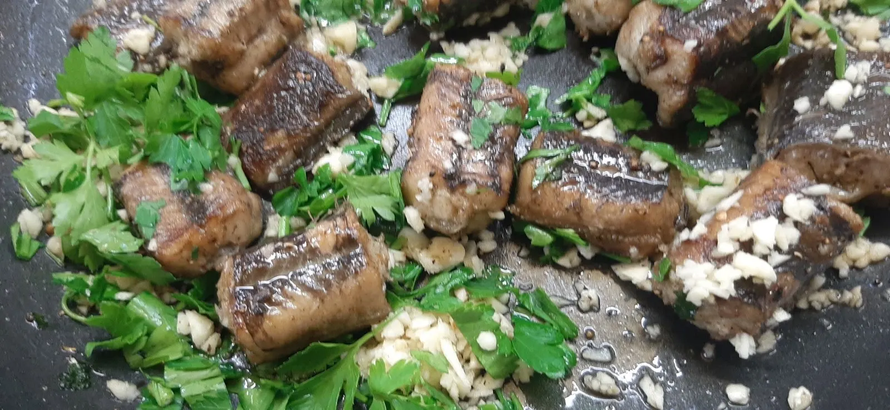
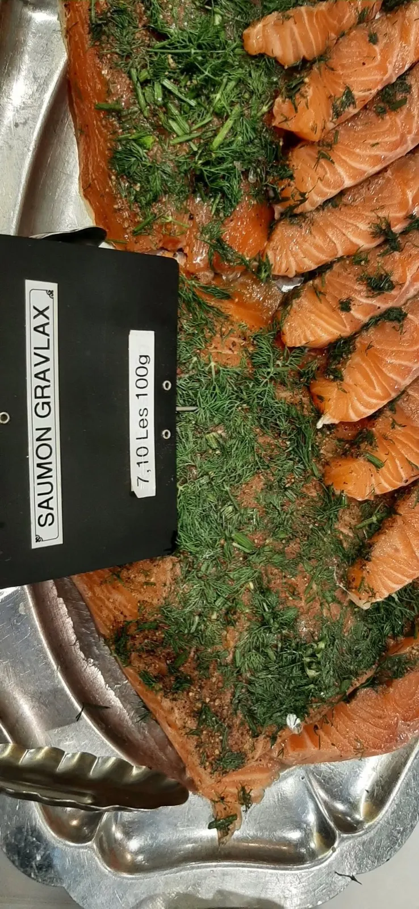
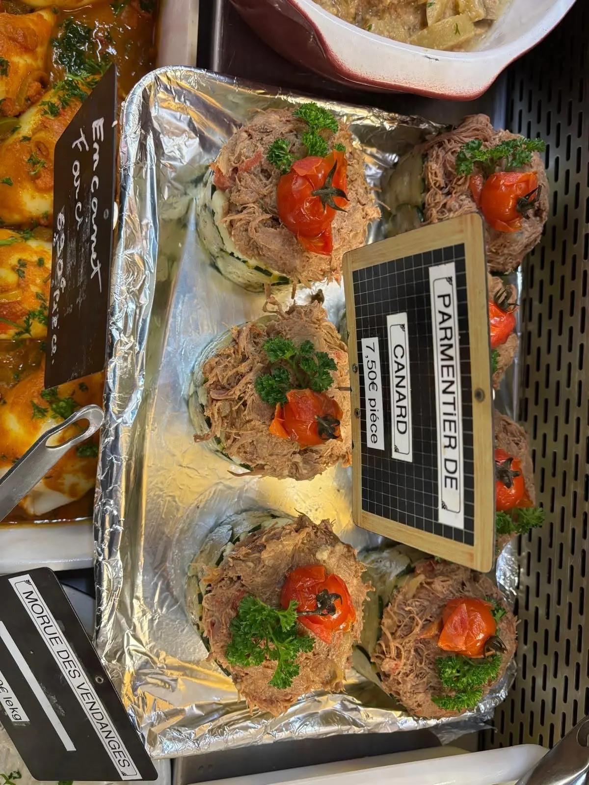
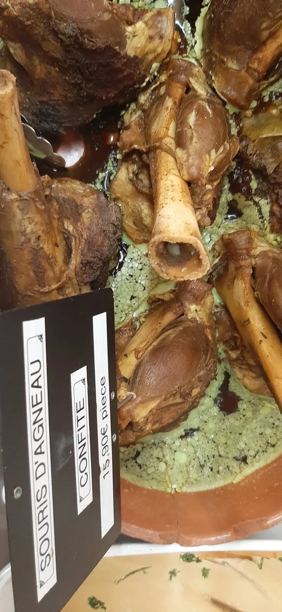
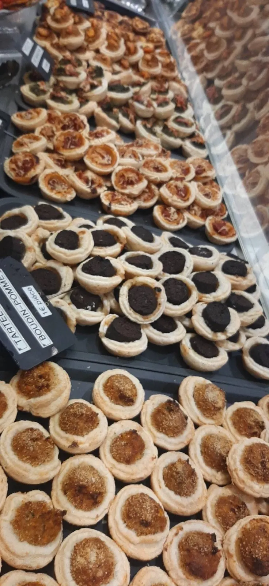

Traiteur local aux Halles de Niort
Des plats régionaux faits maison, frais et savoureux.
Le jeudi, le samedi et le dimanche matin, place des Halles. À emporter, livrés ou cuisinés chez vous.

- Halles de Niort
- Jeudi, samedi, dimanche le matin
- Fait maison frais et local
- 5,0 sur 5 9 avis Google
Vu dans la vitrine
Quelques plats du Ti' Maraichin.
- Anguilles en persillade
- Saumon gravlax à l'aneth
- Souris d'agneau confites
- Parmentier de canard
- Filet mignon sauce pineau
- Tajine d'agneau
- Civet d'escargots
- Flans de poisson aux écrevisses
- Tartelettes boudin-pomme

Saumon gravlax

Pour votre table comme pour vos invités.
Des plats régionaux faits maison, frais, local et savoureux. Un appel suffit pour en parler.
- À emporteraux Halles de Niort
- Livrés
- Cuisinés chez vous

Tartelettes boudin-pommeAux Halles de Niort, trois matins par semaine.
Le stand vous attend sous les Halles, le jeudi, le samedi et le dimanche, dès 7 h.
Place des Halles
79000 Niort
Jeudi7 h – 13 h
Samedi7 h – 13 h 30
Dimanche7 h – 13 h
Lundi, mardi, mercredi, vendrediFermé
5,0sur 5
9 avis Google
9 avis Google
La note et les avis des clients se lisent sur la fiche Google.
- Téléphone
- 06 28 63 30 18
- Adresse
- Place des Halles
79000 Niort - tireauolivier@gmail.com
- Aux Halles
- Jeudi et dimanche 7 h – 13 h, samedi 7 h – 13 h 30